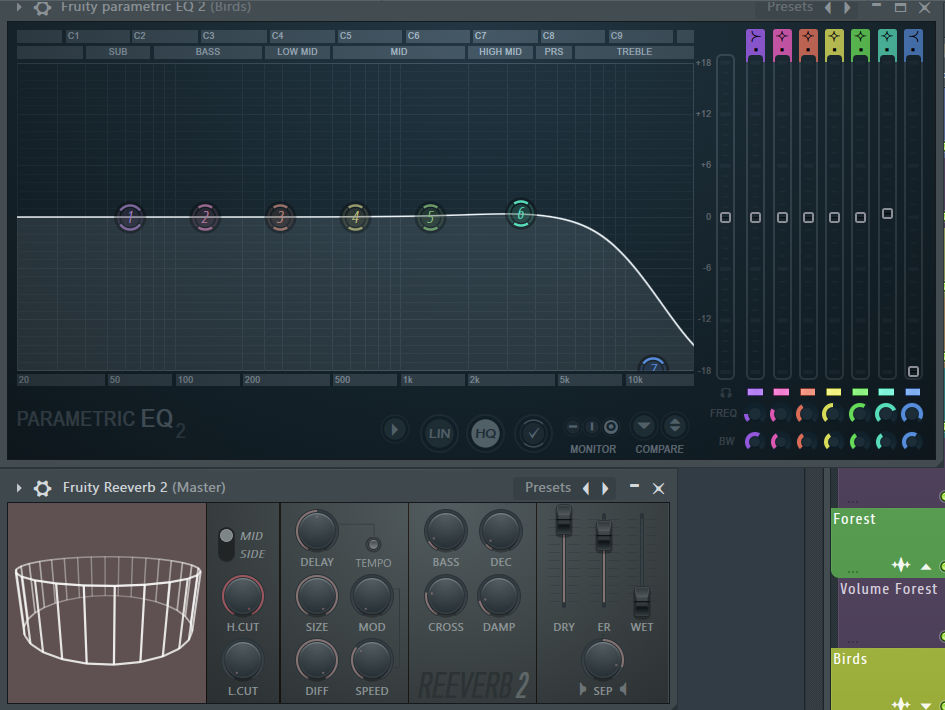

I consider myself as a begginer in some ways through this thematic, because I think I have lots of things to learn left. Anyways, I know how to use FLStudio20 to make sountracks for videogames and lots of other things.
I know how plugins function, so I can create sounds with Reverb, Echoes, modify Frequencies... for any project 
This is more kindda of a personal hobby, but it's directly related with the knowledge I've been learning from studying music and sound in general on my own.